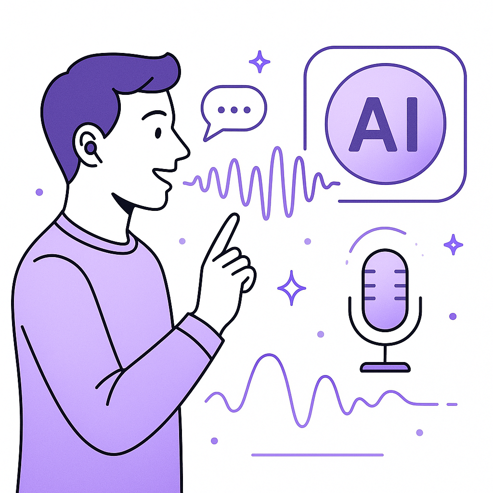

Publishing Recommendation
reviseSeveral drafts contain repetitive themes and could benefit from more unique angles or specific insights to stand out, particularly in the crowded AI space.
Today's drafts cover a range of AI topics, from security gaps in enterprise AI to Microsoft's new cost-saving models. While the posts align well with current trends, they lack distinctiveness in tone and perspective. Strengthening the posts with sharper insights and eliminating redundancy will enhance their impact and relevance.
LinkedIn Posts (10)
1. AI agent security gaps in enterprises ★ Purands solution · high priority
CTA: How does your enterprise handle AI security challenges?
Caption: AI agent security incidents in enterprises.
Alternative hooks
- 54% of enterprises have faced AI agent security incidents.
- Over half of enterprises report AI agent security gaps.
- Security incidents in AI: a 54% reality check for enterprises.
Research behind this post (sources, summaries & confidence)
AI agent security gaps in enterprises conf 0.85 · AI startups
A reported security gap in AI agent management highlights critical risks and challenges in deploying AI at scale, impacting customer data security and trust.
Sources & what I took from each
- 54% of enterprises have experienced an AI agent security incident.: VentureBeat provides data on the prevalence of security incidents involving AI agents. ↗ read source
Statistics
- 54% of enterprises have experienced an AI agent security incident.
Original trend links
Risks / caveats
- Security incidents can lead to significant data breaches and loss of customer trust.
2. Nike resets online distribution in China ★ Purands solution · high priority
CTA: How are you adapting your retention strategies for market-specific challenges in APAC?
Alternative hooks
- Nike's China strategy shift is a wake-up call for APAC marketers.
- Local insight is the new currency in China's fragmented market.
- Adapting to APAC's unique commerce dynamics: lessons from Nike.
Research behind this post (sources, summaries & confidence)
Nike resets online distribution in China conf 0.80 · APAC commerce dynamics
Nike's strategy shift in the fragmented Chinese market highlights the unique challenges and opportunities in APAC commerce, relevant for retention marketing strategies.
Sources & what I took from each
- Nike is adjusting its online distribution to better cater to the Chinese market.: RetailDive reports on Nike's strategic adjustments in China to address market fragmentation. ↗ read source
Original trend links
Risks / caveats
- Market-specific strategies may not always yield the expected results due to varying consumer behaviors.
3. Salesforce rolls out new Slackbot AI agent ★ Purands solution · high priority
CTA: How do you see AI tools reshaping your CRM strategies?
Alternative hooks
- Salesforce's new AI Slackbot is here. What's the real impact?
- New AI tools from Salesforce are shaking up the CRM world.
- AI-enhanced Slackbot by Salesforce: a game-changer or just another tool?
Research behind this post (sources, summaries & confidence)
Salesforce rolls out new Slackbot AI agent conf 0.75 · AI industry
Salesforce's AI-enhanced Slackbot reflects growing competition in workplace AI solutions, with potential impacts on productivity tools and CRM strategies.
Sources & what I took from each
- Salesforce rolls out new AI-enhanced Slackbot.: VentureBeat reports on Salesforce's strategic move to enhance Slack's functionality with AI. ↗ read source
Original trend links
Risks / caveats
- The effectiveness of new AI tools in improving productivity may vary depending on user adoption.
4. Michaels launches AI shopping assistant ★ Purands solution · high priority
CTA: How do you see AI transforming customer engagement in your industry?
Alternative hooks
- Michaels' new AI shopping assistant is more than just a search tool.
- What happens when AI transcends keyword filtering in retail?
- Michaels' AI assistant shows how personalization can transform shopping.
Research behind this post (sources, summaries & confidence)
Michaels launches AI shopping assistant conf 0.75 · AI industry
Michaels' AI shopping assistant launch showcases how retailers are leveraging AI to enhance customer experience and drive personalized shopping journeys.
Sources & what I took from each
- Michaels launches an AI shopping assistant.: RetailDive discusses Michaels' new AI tool aimed at improving customer engagement through personalized recommendations. ↗ read source
Original trend links
Risks / caveats
- AI-driven tools may face challenges in gaining customer trust due to privacy concerns.
5. WhatsApp commerce: Amazon requires labeling of AI-generated content ★ Purands solution · high priority
CTA: How are you managing AI content compliance in your marketing strategies?
{kind=link}
Image prompt · flat-vector
Caption: AI compliance in WhatsApp commerce.
Alternative hooks
- Amazon's labeling rule for AI content in ads - a compliance hurdle or a transparency opportunity?
- How do you ensure AI-driven content on WhatsApp is both compliant and effective?
- New labeling laws for AI content: are you ready for the changes in WhatsApp commerce?
Research behind this post (sources, summaries & confidence)
WhatsApp commerce: Amazon requires labeling of AI-generated content conf 0.70 · WhatsApp commerce
New regulations on labeling AI-generated content in WhatsApp commerce could affect marketing strategies and compliance for businesses using AI in customer engagement.
Sources & what I took from each
- Amazon instructs sellers to label AI-generated people in product ads to comply with NY law.: Techmeme references this requirement in response to new legal regulations. ↗ read source
Original trend links
Risks / caveats
- Compliance costs for businesses may increase due to new labeling requirements.
6. La-Z-Boy expands 3D cloud tech for product imagery ★ Purands solution · high priority
CTA: How do you see 3D tech transforming your customer engagement strategies?
{kind=link}
Image prompt · isometric-flat
Caption: 3D cloud tech for product engagement.
Alternative hooks
- 3D cloud tech isn't just for gamers anymore.
- Visual appeal is the new frontier in customer engagement.
- What if your product images could do more than just look good?
Research behind this post (sources, summaries & confidence)
La-Z-Boy expands 3D cloud tech for product imagery conf 0.70 · Shopify ecosystem
La-Z-Boy's use of 3D cloud technology for product imagery highlights innovation in customer experience and visualization, relevant for Shopify merchants and e-commerce platforms.
Sources & what I took from each
- La-Z-Boy expands 3D cloud technology for product imagery.: RetailDive highlights La-Z-Boy's initiative to enhance customer experience through advanced visualization. ↗ read source
Original trend links
Risks / caveats
- Implementation and integration costs could be a barrier for widespread adoption.
7. Microsoft launches new in-house AI models cutting costs
CTA: How might these cost reductions influence your AI strategy?
Caption: Cost reduction impact of Microsoft's AI models.
Alternative hooks
- Can Microsoft really cut AI costs by 89%?
- Is Microsoft's cost-saving claim in AI too good to be true?
- Microsoft's new AI models claim to slash costs by 89%.
Research behind this post (sources, summaries & confidence)
Microsoft launches new in-house AI models cutting costs conf 0.90 · AI startups
Microsoft's new in-house AI models promise significant cost savings, which could disrupt the AI services landscape and influence SaaS and AI startup strategies.
Sources & what I took from each
- Microsoft's models claim up to 89% cost reductions compared to OpenAI offerings.: VentureBeat articles report Microsoft's claim of significant cost savings with their new AI models. ↗ read source
Statistics
- 89% cost reduction claimed by Microsoft compared to OpenAI.
Original trend links
- https://venturebeat.com/infrastructure/microsoft-launches-new-in-house-ai-models-it-says-cut-costs-up-to-89-versus-openai
- https://venturebeat.com/infrastructure/microsoft-launches-new-in-house-ai-models-it-says-cut-costs-up-to-89-versus-openai
Risks / caveats
- Claims of cost reduction may not account for all variables in AI deployment costs.
8. AegisAI lands $36M to combat AI-driven spear phishing
CTA: How do you see AI changing the landscape of cybersecurity in the next few years?
{kind=link}
Image prompt · flat-vector
Caption: AI-driven spear phishing defenses.
Alternative hooks
- AegisAI just landed $36 million to tackle a growing threat: AI-driven spear phishing.
- Ever wondered why AI-driven threats are so hard to stop? AegisAI's latest move might hold the answer.
- Spear phishing is getting a high-tech makeover. Here's how AegisAI plans to fight back.
Research behind this post (sources, summaries & confidence)
AegisAI lands $36M to combat AI-driven spear phishing conf 0.85 · AI startups
AegisAI's funding to tackle AI-driven spear phishing reflects the growing emphasis on cybersecurity within AI applications, relevant for data protection and trust in digital environments.
Sources & what I took from each
- AegisAI receives $36M in funding to combat AI-driven spear phishing.: TechCrunch highlights AegisAI's focus on cybersecurity and the significance of the investment. ↗ read source
Original trend links
Risks / caveats
- As the threat landscape evolves, solutions must continuously adapt to new challenges.
9. Patreon lays off 20% of its workforce
CTA: How do you see tech companies adapting to these strategic shifts?
Alternative hooks
- Patreon's 20% workforce cut isn't just about saving money.
- A 20% layoff at Patreon signals more than just economic trimming.
- What do Patreon's layoffs reveal about tech sector shifts?
Research behind this post (sources, summaries & confidence)
Patreon lays off 20% of its workforce conf 0.80 · AI industry
Significant layoffs at Patreon highlight challenges faced by tech companies in adapting to market changes, with potential implications for AI startups and technology businesses globally.
Sources & what I took from each
- Patreon announced laying off 20% of its workforce.: Reports from TechCrunch and The Verge confirm the layoffs, indicating a strategic shift in Patreon's business model. ↗ read source
Original trend links
- https://techcrunch.com/2026/07/23/patreon-lays-off-off-20-of-its-workforce/
- https://www.theverge.com/tech/970211/patreon-layoffs-ai
Risks / caveats
- Layoffs may lead to negative impacts on employee morale and public perception.
10. Anthropic updates Claude voice mode with more capable models
CTA: What voice-activated features do you think will become essential in the next few years?

⬇ Download image{kind=link}
Image prompt · isometric-flat
Caption: Enhanced voice models in AI technology.
Alternative hooks
- Voice-activated tasks are getting a boost.
- Anthropic's Claude voice mode just leveled up.
- Enhanced voice models mean more natural interactions.
Research behind this post (sources, summaries & confidence)
Anthropic updates Claude voice mode with more capable models conf 0.80 · AI startups
Enhancements to Anthropic's Claude voice model illustrate advancements in AI capabilities, influencing customer engagement strategies and technology adoption.
Sources & what I took from each
- The update enables broader functionality in voice-activated tasks.: TechCrunch and The Verge discuss the expanded capabilities of Anthropic's Claude voice model. ↗ read source
Original trend links
- https://techcrunch.com/2026/07/23/anthropic-updates-claude-voice-mode-with-more-capable-models
- https://www.theverge.com/ai-artificial-intelligence/970065/anthropic-voice-mode-claude-opus-sonnet-haiku-ai
Risks / caveats
- Adoption of new technologies may be slow due to integration challenges.
Today's Trends
| # | Trend | Category | Why it matters |
|---|---|---|---|
| 1 | Patreon lays off 20% of its workforce
source source |
AI industry | Significant layoffs at Patreon highlight challenges faced by tech companies in adapting to market changes, with potential implications for AI startups and technology businesses globally. |
| 2 | Microsoft launches new in-house AI models cutting costs
source source |
AI startups | Microsoft's new in-house AI models promise significant cost savings, which could disrupt the AI services landscape and influence SaaS and AI startup strategies. |
| 3 | WhatsApp commerce: Amazon requires labeling of AI-generated content
source |
WhatsApp commerce | New regulations on labeling AI-generated content in WhatsApp commerce could affect marketing strategies and compliance for businesses using AI in customer engagement. |
| 4 | Nike resets online distribution in China
source |
APAC commerce dynamics | Nike's strategy shift in the fragmented Chinese market highlights the unique challenges and opportunities in APAC commerce, relevant for retention marketing strategies. |
| 5 | AI agent security gaps in enterprises
source |
AI startups | A reported security gap in AI agent management highlights critical risks and challenges in deploying AI at scale, impacting customer data security and trust. |
| 6 | Anthropic updates Claude voice mode with more capable models
source source |
AI startups | Enhancements to Anthropic's Claude voice model illustrate advancements in AI capabilities, influencing customer engagement strategies and technology adoption. |
| 7 | Stripe in talks to acquire OpenRouter for $10B
source |
AI industry | Stripe's potential acquisition of OpenRouter could reshape the AI model marketplace, affecting competitive dynamics and partnership opportunities in the AI ecosystem. |
| 8 | Salesforce rolls out new Slackbot AI agent
source |
AI industry | Salesforce's AI-enhanced Slackbot reflects growing competition in workplace AI solutions, with potential impacts on productivity tools and CRM strategies. |
| 9 | Insurance startup Corgi raises $4B in third round in 8 weeks
source |
AI startups | Corgi's rapid funding rounds underscore the intense interest and investment in AI-driven insurance solutions, reflecting broader trends in AI startup financing. |
| 10 | La-Z-Boy expands 3D cloud tech for product imagery
source |
Shopify ecosystem | La-Z-Boy's use of 3D cloud technology for product imagery highlights innovation in customer experience and visualization, relevant for Shopify merchants and e-commerce platforms. |
| 11 | OpenAI's ChatGPT Health rollout
source |
AI industry | The rollout of ChatGPT Health by OpenAI represents a significant development in AI applications for healthcare, with implications for data integration and patient engagement. |
| 12 | Meta accelerates natural gas investments
source |
AI industry | Meta's shift towards natural gas highlights sustainability challenges in tech infrastructure, affecting corporate responsibility strategies and energy management in AI operations. |
| 13 | AegisAI lands $36M to combat AI-driven spear phishing
source |
AI startups | AegisAI's funding to tackle AI-driven spear phishing reflects the growing emphasis on cybersecurity within AI applications, relevant for data protection and trust in digital environments. |
| 14 | Michaels launches AI shopping assistant
source |
AI industry | Michaels' AI shopping assistant launch showcases how retailers are leveraging AI to enhance customer experience and drive personalized shopping journeys. |
Risk Assessment
No risks flagged.
Suggested LinkedIn Comments (30)
Open each post, then paste the copied comment. Nothing is posted automatically.
1. insight · Huiyi He — We're looking for a Machine Learning Engineer. If you're interested in training
Post by: Huiyi He
Why it works: It highlights the importance of domain-specific models in delivering practical AI solutions, adding depth to the hiring call.
↗ Open LinkedIn post to paste comment2. insight · Alissa DeRouchie — Your Spotify recommendations and ChatGPT are not the same technology. It's a dis
Post by: Alissa DeRouchie
Why it works: Clarifying the difference between these technologies helps professionals understand their unique applications and impacts.
↗ Open LinkedIn post to paste comment3. insight · Sergio Rivera Cuevas — 𝗔𝗿𝘁𝗶𝗰𝗹𝗲: Labels in Machine Learning. Once we define the features, the next step
Post by: Sergio Rivera Cuevas
Why it works: The comment emphasizes the need for tailored approaches in machine learning, adding value to the discussion on prediction problems.
↗ Open LinkedIn post to paste comment4. expansion · Saurabh Rathi — Day 2 of my Machine Learning journey is complete! Today I learned how machines
Post by: Saurabh Rathi
Why it works: It expands on the idea presented, offering additional metrics that are crucial for evaluating machine learning models.
↗ Open LinkedIn post to paste comment5. insight · Shovit Prusty — We are hiring! Machine Learning Engineer. Domain - Retail. Expertise - MLOps in
Post by: Shovit Prusty
Why it works: It underscores the importance of MLOps, connecting the role to business-critical functions in AI deployment.
↗ Open LinkedIn post to paste comment6. insight · Kyle Tipton — The second article in BioConsortia’s Decoding Microbial Performance series is up
Post by: Kyle Tipton
Why it works: The comment connects microbial AI research to broader sustainability goals, adding a layer of societal relevance.
↗ Open LinkedIn post to paste comment7. opinion · Nayan Soni — 🚀 𝐅𝐨𝐫𝐝 𝐌𝐨𝐭𝐨𝐫 𝐂𝐨𝐦𝐩𝐚𝐧𝐲 𝐢𝐬 𝐡𝐢𝐫𝐢𝐧𝐠 𝐚𝐧 𝐀𝐈 𝐄𝐧𝐠𝐢𝐧𝐞𝐞𝐫! If you're passionate about Gener
Post by: Nayan Soni
Why it works: The comment reflects on the potential impact of AI on the automotive industry, emphasizing transformative opportunities.
↗ Open LinkedIn post to paste comment8. opinion · Sandeep Nidigallu — I'm excited to share my article on Machine Learning for Beginners! This article
Post by: Sandeep Nidigallu
Why it works: It acknowledges the importance of accessible education in AI, supporting the post's goal of simplifying learning.
↗ Open LinkedIn post to paste comment9. opinion · Raghavendra Bagalkoti — 𝐌𝐨𝐬𝐭 𝐚𝐬𝐩𝐢𝐫𝐢𝐧𝐠 𝐌𝐋 𝐞𝐧𝐠𝐢𝐧𝐞𝐞𝐫𝐬 𝐬𝐩𝐞𝐧𝐝 𝐦𝐨𝐧𝐭𝐡𝐬 𝐣𝐮𝐦𝐩𝐢𝐧𝐠 𝐛𝐞𝐭𝐰𝐞𝐞𝐧 𝐫𝐚𝐧𝐝𝐨𝐦 𝐭𝐮𝐭𝐨𝐫𝐢𝐚𝐥𝐬. You d
Post by: Raghavendra Bagalkoti
Why it works: The comment reinforces the value of a well-respected course, positioning it as a must-have in ML education.
↗ Open LinkedIn post to paste comment10. insight · Ali Gori — 3 Machine Learning algorithms you must know in 2026! 🤖 📌 KNN 📌 Naïve Bayes 📌 SVM
Post by: Ali Gori
Why it works: By highlighting the specific advantages of SVM, the comment adds depth and specificity to the post about ML algorithms.
↗ Open LinkedIn post to paste comment11. insight · Joe Sprangel, DBA — 𝐃𝐞𝐦𝐲𝐬𝐭𝐢𝐟𝐲𝐢𝐧𝐠 𝐭𝐡𝐞 𝐅𝐥𝐨𝐨𝐫: 𝐁𝐮𝐢𝐥𝐝𝐢𝐧𝐠 𝐅𝐨𝐮𝐧𝐝𝐚𝐭𝐢𝐨𝐧𝐚𝐥 𝐀𝐈 𝐋𝐢𝐭𝐞𝐫𝐚𝐜𝐲 𝐟𝐨𝐫 𝐅𝐫𝐨𝐧𝐭𝐥𝐢𝐧𝐞 𝐖𝐨𝐫𝐤𝐞𝐫𝐬
Post by: Joe Sprangel, DBA
Why it works: It highlights the practical benefits of AI training for frontline workers, aligning with the post's focus on demystifying technology.
↗ Open LinkedIn post to paste comment12. insight · John Luba — Lately, I’ve been thinking a lot about the intersection of vision science, desig
Post by: John Luba
Why it works: It acknowledges the author's journey and adds depth by emphasizing the importance of foundational knowledge in AI and design.
↗ Open LinkedIn post to paste comment13. expansion · Andiappan K — Alternatives to Text based LLM
Post by: Andiappan K
Why it works: It broadens the discussion by suggesting the potential of multimodal AI, which aligns with exploring alternatives.
↗ Open LinkedIn post to paste comment14. insight · Samuel Alexander — Large Language Models vs. Small Language Models Finding the Right AI for the Int
Post by: Samuel Alexander
Why it works: It supports the post's argument for a diverse AI ecosystem, adding a practical perspective on model utility.
↗ Open LinkedIn post to paste comment15. insight · Tongyi Lab — The Qwen model family cyber atlas: a visual walkthrough of how AI really evolved
Post by: Tongyi Lab
Why it works: It connects the post's historical overview with actionable insights for strategic planning, adding value to the discussion.
↗ Open LinkedIn post to paste comment16. insight · Jim Toh — 🤖 Large Language Models (LLMs) never suddenly appear one. They come from years
Post by: Jim Toh
Why it works: It acknowledges the industry's dynamic nature and highlights the importance of sustained progress in AI development.
↗ Open LinkedIn post to paste comment17. insight · Start It or Scrap It Podcast — Large language models aren't intentionally lying to you. They're programmed for
Post by: Start It or Scrap It Podcast
Why it works: It emphasizes the importance of human involvement in AI processes, aligning with the post's message about accuracy.
↗ Open LinkedIn post to paste comment18. insight · David Rodriguez — Building displays in PI Vision just got even easier! In this video, I build a li
Post by: David Rodriguez
Why it works: It highlights the practical benefits of AI integration, reinforcing the post's demonstration of enhanced efficiency.
↗ Open LinkedIn post to paste comment19. insight · Ming Tan — The Assembly Line of Meaning: How AI Actually Works This video explain the inner
Post by: Ming Tan
Why it works: It underscores the importance of understanding AI mechanisms, aligning with the post's educational focus.
↗ Open LinkedIn post to paste comment20. insight · Jai Sharma — For years, the AI race has focused on building larger and more powerful language
Post by: Jai Sharma
Why it works: It highlights the practical advantages of SLMs, supporting the post's focus on task-specific efficiency and privacy.
↗ Open LinkedIn post to paste comment21. insight · Rami Krispin — My LinkedIn Learning course - SQL AI Agents with Large Language Models — has re
Post by: Rami Krispin
Why it works: It acknowledges the achievement and highlights the practical application of SQL AI agents, adding value to the post.
↗ Open LinkedIn post to paste comment22. insight · Harshit Sharma — LLM Transformers Architecture in simplistic way
Post by: Harshit Sharma
Why it works: It reinforces the importance of demystifying complex AI concepts, adding depth to the original post.
↗ Open LinkedIn post to paste comment23. insight · Rabiul Bipu — REGIONAL DIALECTS: THE HIDDEN FAILURE POINT IN BENGALI AI "তুই কনে যাইতাছস?" T
Post by: Rabiul Bipu
Why it works: This comment adds context to the post by emphasizing the need for diverse data in AI training, which is a practical takeaway.
↗ Open LinkedIn post to paste comment24. insight · Aydin S. — You speak Hindi to AI - AI speaks back with warmth and caution. You speak Englis
Post by: Aydin S.
Why it works: It expands on the post by explaining why language context is critical in AI interactions, providing a concrete reason for the observed effects.
↗ Open LinkedIn post to paste comment25. insight · Rolando Sa — Do you want to build AI Agents that can move an industry? If you're tired of bu
Post by: Rolando Sa
Why it works: It highlights the importance of leadership in developing impactful AI applications, connecting the role to broader industry outcomes.
↗ Open LinkedIn post to paste comment26. insight · Kumaran Ponnambalam — 𝗗𝗲𝗲𝗽 𝗹𝗲𝗮𝗿𝗻𝗶𝗻𝗴 𝗶𝘀 𝘁𝗵𝗲 𝗳𝗼𝘂𝗻𝗱𝗮𝘁𝗶𝗼𝗻 𝗳𝗼𝗿 𝗟𝗟𝗠𝘀 𝗮𝗻𝗱 𝗔𝗴𝗲𝗻𝘁𝗶𝗰 𝗔𝗜 Generative AI, LLMs, co
Post by: Kumaran Ponnambalam
Why it works: The comment underscores the enduring relevance of deep learning knowledge, aligning with the post's educational focus.
↗ Open LinkedIn post to paste comment27. insight · TEKsystems — We asked our community: Where would you want an AI agent to save you the most ti
Post by: TEKsystems
Why it works: It adds value by explaining the implications of the survey results, linking AI's role to enhanced human productivity.
↗ Open LinkedIn post to paste comment28. insight · Payal Vadhani — Less than half of deployed agents are actively monitored. The gap isn't a policy
Post by: Payal Vadhani
Why it works: This comment emphasizes the necessity of ongoing oversight, which complements the post's focus on governance issues.
↗ Open LinkedIn post to paste comment29. insight · Vincent Verdugo Voortman — Everyone is talking about AI agents. Almost no one defines them correctly. An a
Post by: Vincent Verdugo Voortman
Why it works: It clarifies the concept of AI agents, adding depth by focusing on the importance of thoughtful design.
↗ Open LinkedIn post to paste comment30. opinion · Daryl Pereira — This question deserves some thought! Apparently I'm not with the majority on my
Post by: Daryl Pereira
Why it works: It encourages critical thinking and validates the author's stance, offering a positive take on being in the minority.
↗ Open LinkedIn post to paste comment